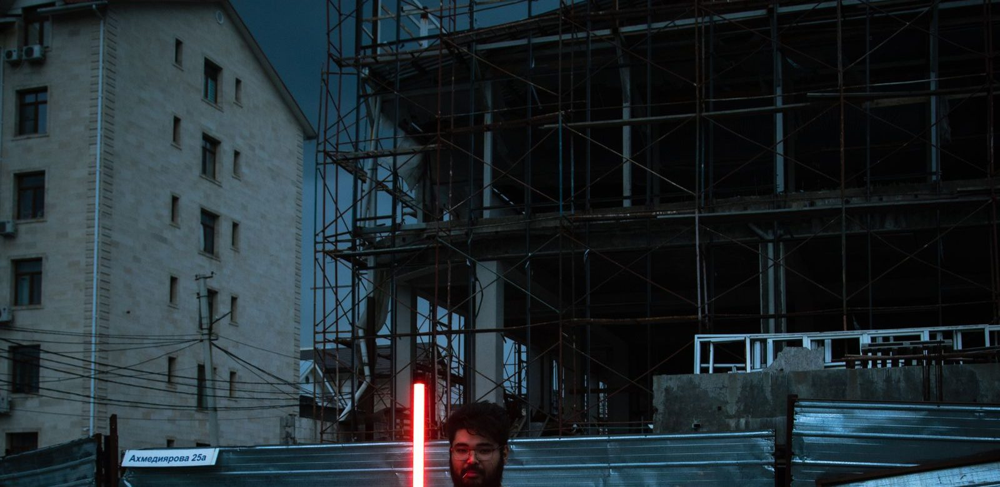

Wat is Star Wars?
Star Wars is een reeks van negen hoofdfilms over een strijd tussen goed en kwaad in de ruimte, bedacht door George Lucas. Hier staat in het kort wat het is, wie wie is en welke films er zijn.

In het kort
Star Wars is een reeks films over een strijd tussen goed en kwaad in de ruimte, bedacht door de Amerikaanse regisseur George Lucas. De eerste film kwam in 1977 uit. De hoofdreeks telt negen films en heet de Skywalker-saga, naar de familie waar het verhaal over gaat.
| Bedacht door | George Lucas |
| Eerste film | Star Wars (1977), later hernoemd tot Episode IV: A New Hope |
| Hoeveel hoofdfilms | Negen, samen de Skywalker-saga |
| Waar het over gaat | De familie Skywalker, en de strijd tussen de lichte en de donkere kant van de Force |
| Van wie is het | Lucasfilm, sinds 2012 onderdeel van Disney |
| Waar je het kunt kijken | Disney+ |
| Bekendste personages | Luke Skywalker, prinses Leia, Han Solo, Darth Vader, Yoda, Rey |
De negen hoofdfilms, met het jaar waarin ze uitkwamen
Ze zijn niet op volgorde gemaakt. Lucas begon in het midden van het verhaal en vertelde het begin pas ruim twintig jaar later.
- Episode I: The Phantom Menace (1999)
- Episode II: Attack of the Clones (2002)
- Episode III: Revenge of the Sith (2005)
- Episode IV: A New Hope (1977), de allereerste film
- Episode V: The Empire Strikes Back (1980)
- Episode VI: Return of the Jedi (1983)
- Episode VII: The Force Awakens (2015)
- Episode VIII: The Last Jedi (2017)
- Episode IX: The Rise of Skywalker (2019)
Daarnaast bestaan er losse films en series die naast dit verhaal spelen. In welke volgorde je het beste kunt beginnen, staat in de Star Wars kijkvolgorde.
Wat is de Force?
De Force is in Star Wars een kracht die overal in zit en alles met elkaar verbindt. Wie ermee kan omgaan, kan dingen laten zweven, iemand anders op een idee brengen en aanvoelen wat er staat te gebeuren. Er zijn twee kanten:
- De lichte kant. Die gebruiken de Jedi. Zij beschermen anderen en houden zich in.
- De donkere kant. Die gebruiken de Sith. Die is sneller en sterker, maar je moet er boosheid en angst voor gebruiken, en daar kom je niet makkelijk meer van los.
Het beroemdste voorbeeld is Anakin Skywalker: een Jedi die naar de donkere kant gaat en dan Darth Vader wordt. Dat is in één zin het hele verhaal van de eerste zes films.
Wie is wie
- Luke Skywalker: een jongen van een woestijnplaneet die Jedi wordt.
- Prinses Leia: zijn tweelingzus, leider van het verzet.
- Han Solo: een smokkelaar met een snel schip, de Millennium Falcon.
- Darth Vader: de man met het zwarte masker, en de vader van Luke en Leia.
- Yoda: de kleine, oude Jedi-meester die in rare volgorde praat.
- Obi-Wan Kenobi: de Jedi die eerst Anakin opleidt en later Luke.
- R2-D2 en C-3PO: twee robots die in bijna elke film meedoen.
- Chewbacca: de harige maat van Han Solo, die brult in plaats van praat.
- Rey: de hoofdpersoon van de laatste drie films.
Lichtzwaarden
Een lichtzwaard is het wapen van een Jedi en van een Sith: een handvat waar een gekleurde straal licht uit komt, die dwars door bijna alles heen gaat. De kleur zegt iets over wie het draagt. Jedi hebben meestal een blauw of groen lichtzwaard, de Sith een rood. Yoda heeft er een groene, Darth Vader een rode.
👪 Tip voor ouders
Star Wars is geen kleuterreeks. Er wordt in gevochten, er gaan personages dood en Revenge of the Sith (2005) is een stuk grimmiger dan de rest. Veel gezinnen beginnen daarom met A New Hope (1977) of met een animatieserie. Kijk voor het advies per titel op Kijkwijzer.
Zelf spelen
Bouw je eigen ruimte-avontuur met deze sets:
💡 Wist je dat?
De zoevende laserzwaarden heten lichtzwaarden. Bijna ieder kind doet het geluid weleens na. En de allereerste film heette in 1977 gewoon Star Wars; het nummer Episode IV kwam er pas later bij.
Lees verder: de kijkvolgorde van alle films, of bekijk de hele Star Wars pagina.
Veelgestelde vragen
Waar gaat Star Wars over?
Over de strijd tussen goed en kwaad in de ruimte, gezien door de ogen van één familie: de Skywalkers. De helden gebruiken de lichte kant van de Force, hun tegenstanders de donkere kant.
Hoeveel Star Wars films zijn er?
De hoofdreeks telt negen films, samen de Skywalker-saga. Daarnaast bestaan er losse films en series die naast dat verhaal spelen.
Wie heeft Star Wars bedacht?
George Lucas. Hij schreef en regisseerde de eerste film, die in 1977 uitkwam. Sinds 2012 is zijn bedrijf Lucasfilm onderdeel van Disney.
In welke volgorde kijk je Star Wars?
Dat kan op twee manieren: op nummer van de episodes, of in de volgorde waarin de films gemaakt zijn. Welke bij jou past, leggen we uit in de Star Wars kijkvolgorde.
Wat is de Force?
Een kracht die in Star Wars overal in zit en alles verbindt. Wie ermee kan omgaan, kan dingen laten zweven en aanvoelen wat er gaat gebeuren. De Jedi gebruiken de lichte kant, de Sith de donkere.